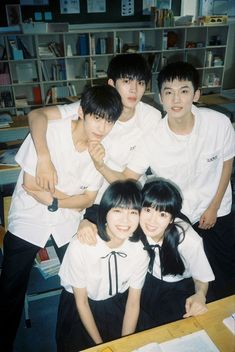
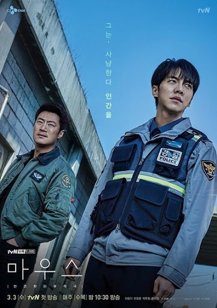
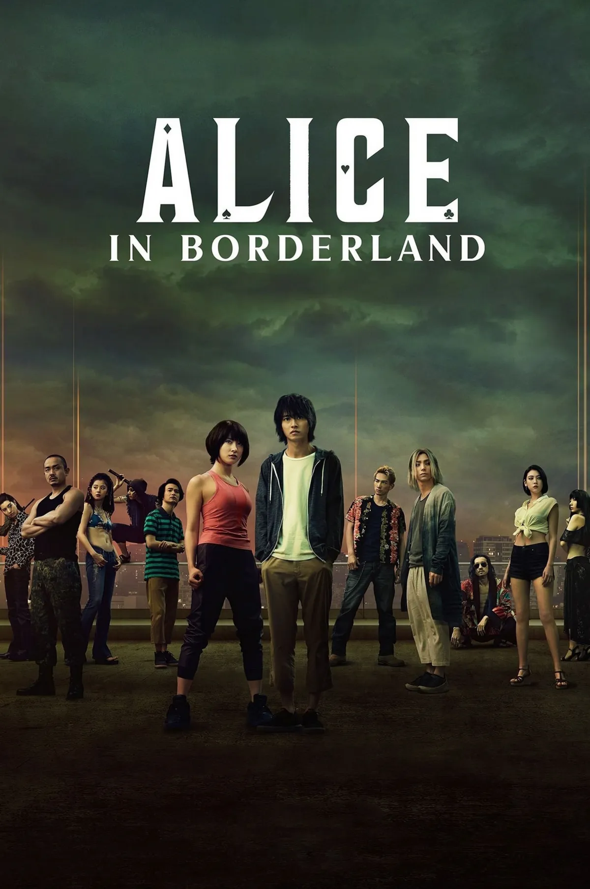

Watching dramas is probably what I spend most of my time doing. Over the past few
years, I have watched a substansial amount of shows.
Here are some of my favorite shows and my rating for them!

When I Fly Torwards You
★★★★★
This is probably one of my favorite dramas.The friendship that the main characters shared are really life goals. This drama is perfect for when you want to watch something lighthearted without using too much of your brain.

Mouse
★★★★★
The best thriller ever! I would geniuenly do anything to watch this drama for the first time again. The acting, the ost, the cast, everything was literally perfection. The plot twist at the end was also mindblowing. I wish more dramas like this would get made.

Alice In Borderland
★★★★☆
I love the plot for this drama. The fast paced scenes were really on point. Might be a controversal take but this is better than Squid Game. Minus one point cause they killed Chiasya :sad
Better Days
★★★★★
I don't usually watch movies but this one is literally a must watch. The cinmetography for the movie was beautiful. This is one of those type of shows that you can't get tired of rewatching